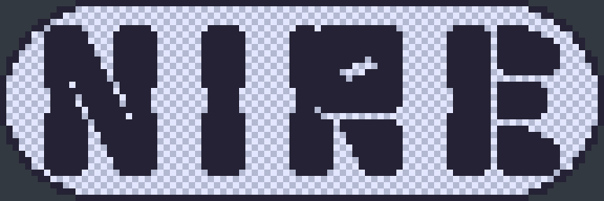

This is the main project page where all of my current or previous projects be it art, writing, music, etc.
For me, working on projects, whether in art, writing, or other mediums, is a deeply fulfilling and invigorating experience. Each project allows me to explore new ideas and express myself in unique ways. When I’m drawing or building a Gundam model set, I lose myself in the details and precision, finding a sense of peace and focus. Writing, especially world building, lets my imagination run wild as I create intricate stories and universes. These projects are more than just hobbies; they are a way for me to channel my creativity, challenge myself, and bring my visions to life. The sense of accomplishment I feel upon completing a project is unmatched, and it fuels my passion to start the next one. Listed Below will be recordings of such projects.
Nire
Nire is a Videogame Concept that I have been creating which is an open-world action adventure taking inspiration from Legend of Zelda: Ocorina of Tima/Breath of the Wild, Dark Souls, Nier: Automata, BLAME and Ghost in the Shell.

The major "theme" for development and gameplay is progression. Progression in the game will be purposful and grand not just in story but also in gameplay. As you play the game the characters you are playing as will develop with you. This progression in gameplay is so wide that by the end of the game you will be playing a game that feels compleatly different. One of my biggest problems with open-worlds is the story progresses and how it is conveyed. To fix this issue there will be many story lines that spread throught in multiple paths that converge into a singular one and this happens multiple times. Additionaly there will be clear eras/chapter in the story.